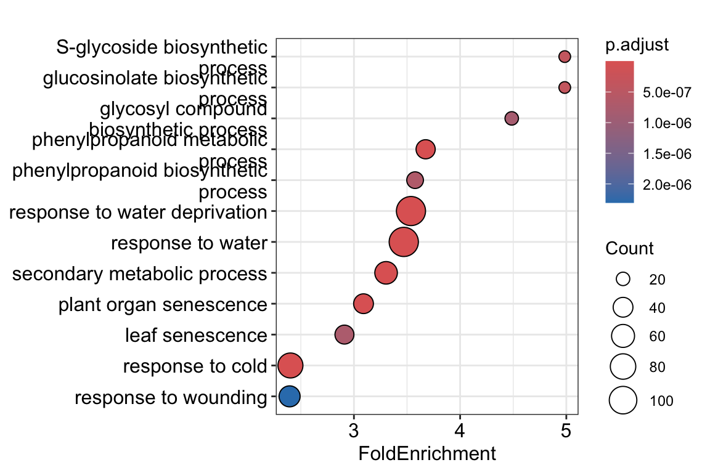
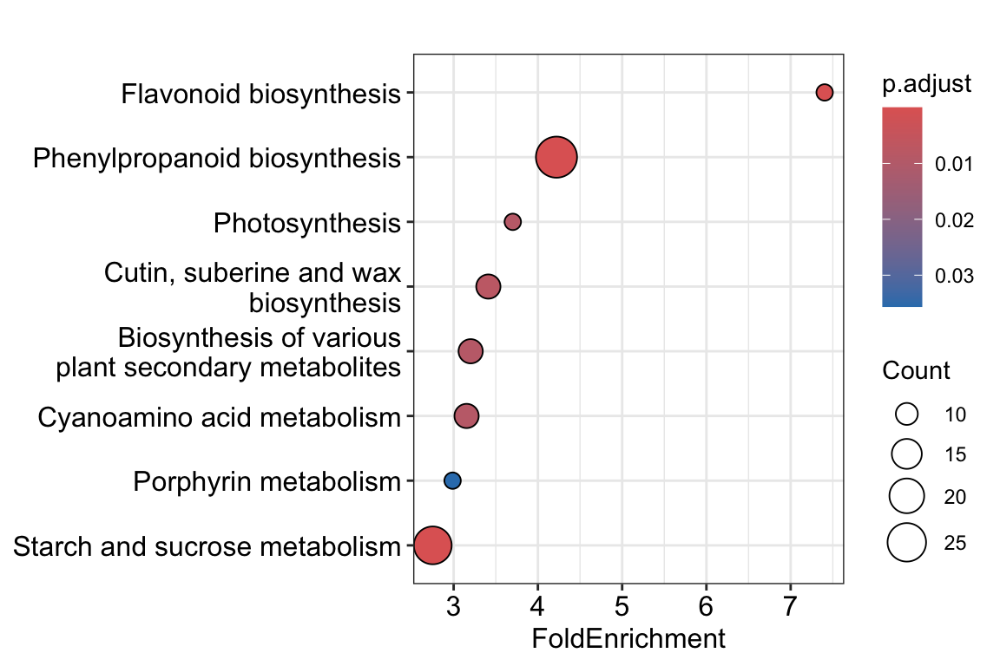
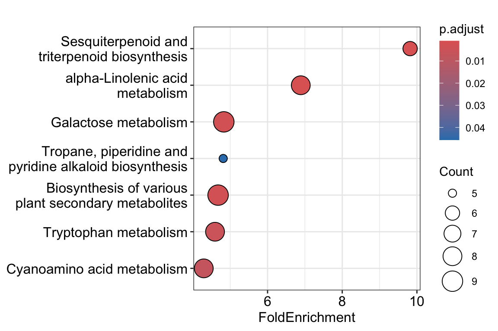

R
library(clusterProfiler)
library(org.At.tair.db)
library(enrichplot)In the previous episode, we ended up with a list of differentially expressed genes. We could examine this list manually and look for our favorite genes of interest. However, the power of RNA-seq is that we can move beyond a simple analysis of a few genes and start to understand which processes or pathways are involved in the response to your treatments. To do this, we will use overrepresentation analysis (ORA) of Gene Ontology (GO) terms.
GO terms offer a standardized way of describing gene functions and the biological processes they participate in. For example, a GO term could be: nucleotide binding or response to biotic stress. GO terms come in three categories:
In the R package that we will use, ORA uses a hypergeometric test to determine whether a particular GO term is enriched in your list of genes. Conceptually, it answers the following question:
Given my background list of genes, are genes annotated to this GO term observed more often in my input gene list than expected by chance?
The background list of genes, sometimes called the ‘universe’ in ORA jargon, is important. Naively, one could decide to use all genes present in annotation of your organism as universe. However, the universe is defined as all the genes that were elegible to be tested for differential expression. For an RNA-seq experiment, this means that genes that were not detected in any of your samples should be removed from the background universe for ORA.
In case you continued directly from the previous episode, you will only need to load a few more packages. clusterProfiler is the main package for enrichment analysis in R, extensively documented here. org.At.tair.db is a database containing functional annotation for Arabidopsis thaliana (At). Functional annotations are available for several model organisms such as Homo sapiens (org.Hs.tair.db), see Bioconductor for all available organisms.
R
library(clusterProfiler)
library(org.At.tair.db)
library(enrichplot)In case you didn’t manage to finish the previous episode, or you’re starting here for other reasons, you can run the following code to get back to the starting point of this episode by running:
R
set.seed(1992)
# Load packages
library(DESeq2)
library(tidyverse)
library(ggrepel)
library(clusterProfiler)
library(org.At.tair.db)
library(enrichplot)
# Read the data
raw_counts <- read.csv("data/GLDS38_raw_counts.csv", header = T, stringsAsFactors = F)
raw_counts <- raw_counts %>% column_to_rownames("gene")
metadata <- read.csv("data/samples_to_condition.csv", header = T)
# Generate DDS object and run DESeq function:
dds <- DESeqDataSetFromMatrix(countData = raw_counts,
colData = metadata,
design = ~ condition)
dds <- DESeq(dds)
# Run DEG analysis
res <- results(dds, alpha = 0.05)
results <- res %>%
as.data.frame() %>%
rownames_to_column("genes") %>%
arrange(padj)
# Define significantly upregulated and downregulated genes with LFC and padj cutoffs
lfc_cutoff <- 1
padj_cutoff <- 0.05
# Make new categorical variable containing significance information
results <- results %>%
mutate(significance = case_when(
padj < padj_cutoff & log2FoldChange > lfc_cutoff ~ 'Significantly upregulated',
padj < padj_cutoff & log2FoldChange < -lfc_cutoff ~ 'Significantly downregulated',
padj < padj_cutoff ~ 'Significant but small effect size',
TRUE ~ 'Not significant'
))
DEGs_list <- results %>% filter(significance == "Significantly upregulated" | significance == "Significantly downregulated") %>% pull(genes)Let’s remind ourselves of what our list of genes of interest now looks like. This list is stored in the variable DEGs_list:
R
head(DEGs_list)[1] "AT5G04120" "AT2G28780" "AT1G62280" "AT1G32450" "AT1G30530" "AT1G15380"length(DEGs_list)[1] 1397Ok, this list contains of 1397 entries of Arabidopsis TAIR gene IDs.
We can perform the GO enrichment analysis with the enrichGO() function, and then plot the results using dotplot()
R
go_results <- enrichGO(
gene = DEGs_list, # Your gene list
OrgDb = org.At.tair.db, # Arabidopsis TAIR10 annotation
keyType = "TAIR", # TAIR10 gene IDs (AT1Gxxx)
ont = "BP", # "BP" (Biological Process), "MF", "CC"
pAdjustMethod = "BH", # Benjamini-Hochberg correction
pvalueCutoff = 0.05, # Significance threshold
qvalueCutoff = 0.05,
readable = TRUE # Convert gene IDs to common names
)
dotplot(go_results, showCategory = 12, x = "FoldEnrichment")
For example, this plot shows us that genes with the GO annotation flavonoid biosynthetic process occur about 4.8 times as often in our gene list, compared to random chance (e.g., picking 1397 random genes from our background gene universe). The color further indicates the adjusted p-value, while the size of the dot corresponds to the number of genes belonging to this GO term in our gene list.
1.
R
universe_list <- results %>% filter(baseMean > 1) %>% pull(genes)
head(universe_list)[1] "AT5G04120" "AT2G28780" "AT1G62280" "AT1G32450" "AT1G30530" "AT1G15380"length(universe_list)[1] 273232.
R
go_results <- enrichGO(
gene = DEGs_list,
universe = universe_list,
OrgDb = org.At.tair.db,
keyType = "TAIR",
ont = "BP",
pAdjustMethod = "BH",
pvalueCutoff = 0.05,
qvalueCutoff = 0.05,
readable = TRUE
)
dotplot(go_results, showCategory = 10, x = "FoldEnrichment")
In this case, not so much changed compared to our earlier BP enrichment analysis, although some categories changed a little bit. At least, we will sleep better tonight, knowing that we performed a statiscally sound ORA.
KEGG terms describe gene functions at the level of pathways. While there will be quite some overlap with GO terms, it can happen that KEGG terms happen to describe what’s happening in your data a bit more clearly. Running and visualizing KEGG enrichment works very similar as GO term enrichment, but first we will need to find the ‘KEGG code’ of the organism we are studying, by searching by the scientific name.
R
kegg_result <- search_kegg_organism('Arabidopsis thaliana', by='scientific_name')
head(kegg_result) kegg_code scientific_name common_name
565 ath Arabidopsis thaliana thale cressAha, the KEGG code of Arabidopsis thaliana is ath.
R
KEGG_result <- enrichKEGG(gene = DEGs_list,
universe = universe_list,
organism = "ath",
minGSSize = 10,
maxGSSize = 500,
pAdjustMethod = "BH",
qvalueCutoff = 0.05,
use_internal_data = FALSE)Reading KEGG annotation online: "https://rest.kegg.jp/link/ath/pathway"...Reading KEGG annotation online: "https://rest.kegg.jp/list/pathway/ath"...dotplot(KEGG_result, x = "FoldEnrichment")
In the GO and KEGG ORA sections, we started with a binary gene list, that is, ‘significant’ vs ‘not significant’. GSEA is another enrichment test that employs a different strategy. Here, we start with a ranked list of all the genes in our experiment. They might be ranked by Log2FoldChange, or adjusted p-value. Then, GSEA answers the following conceptual question:
Are genes from a pathway consistently found toward the top or bottom of the ranked list?
In other words, ORA requires us to make a choice about a threshold of significance and/or fold change, while GSEA is a ‘threshold free’ method.
First, we will prepare the data structure to perform GSEA:
R
gene_list <- results$log2FoldChange
names(gene_list) <- results$genes
gene_list <- gene_list[!is.na(gene_list)]
gene_list <- sort(gene_list, decreasing = TRUE)names of the list items
NA)
Let’s now run the GSEA:
R
gsea_go <- gseGO(
geneList = gene_list,
OrgDb = org.At.tair.db,
keyType = "TAIR",
ont = "BP",
minGSSize = 10,
maxGSSize = 500,
pvalueCutoff = 0.05,
verbose = FALSE
)
gseaplot2(
gsea_go,
geneSetID = 1,
title = gsea_go@result$Description[1]
)1 here, we will plot the GO term with the lowest p-value. Make sure to explore a few more than just the first one, by changing the 1 to other numbers. You can inspect all significant GO terms in table format by using summary(gsea_go).

This graph is rather complex but very interesting! Let’s break the most important parts down:
Some people find it easier to use webservers for GO term enrichment. Of course, that’s also possible. For example, g:Profiler is an excellent webserver where you can simply paste a list of geneIDs, select your organism of study, hit Run query, and visually inspect the results. One big advantage of this webserver is that it contains GO annotations of hundreds of organisms, including many that are not available on Bioconductor for R-based analysis.
This concludes the bioDSC workshop on RNA-seq. We went all the way from experimental design to mapping reads to differential gene expression in R. If you want to practice more with existing datasets, continue to the next episode.